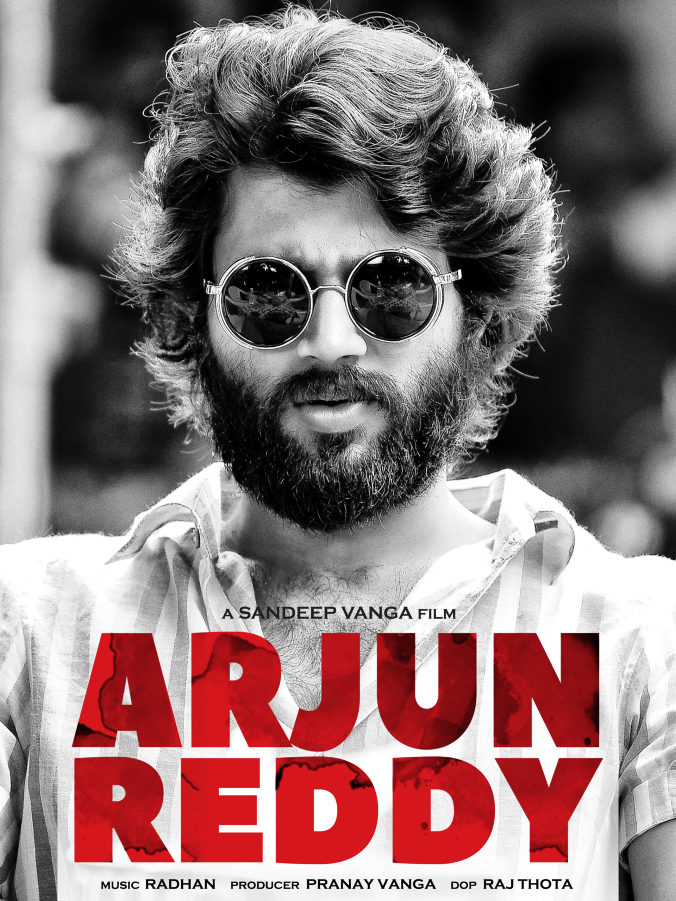

Sandeepreddy vanga movies list.
Animal

एनिमल 2023 में रिलीज होने वाली एक भारतीय हिंदी भाषा की एक्शन ड्रामा फिल्म है[1][5], जिसे संदीप रेड्डी वांगा द्वारा सह-लिखित, निर्देशित और संपादित किया गया है और टी-सीरीज फिल्म्स, भद्रकाली पिक्चर्स और सिने1 स्टूडियो द्वारा निर्मित किया गया है। फिल्म में रणबीर कपूर, अनिल कपूर, बॉबी देओल, रश्मिका मंदाना और त्रिप्ति डिमरी हैं। यह फिल्म एक शक्तिशाली उद्योगपति के निर्दयी बेटे रणविजय और उसके पिता के साथ उसके परेशान रिश्ते पर आधारित है, जो उसके पिता पर हत्या के प्रयास के बाद प्रतिशोध और विनाश के रास्ते पर निकल पड़ने पर और भी खतरे में पड़ जाता है।
फिल्म की आधिकारिक घोषणा जनवरी 2021 में की गई थी। मुख्य फोटोग्राफी अप्रैल 2022 में शुरू हुई और अप्रैल 2023 तक पूरी हो जाएगी, जिसमें अमित रॉय द्वारा छायांकन किया जाएगा। फिल्म का साउंडट्रैक एल्बम प्रीतम, जैम8, विशाल मिश्रा, जानी, मनन भारद्वाज, श्रेयस पुराणिक, आशिम केमसन और हर्षवर्धन रामेश्वर द्वारा रचित था। 201 मिनट के रनटाइम के साथ, एनिमल अब तक बनी सबसे लंबी भारतीय फिल्मों में से एक है। इसे शुरू में अगस्त 2023 में रिलीज़ करने की योजना थी, लेकिन पोस्ट-प्रोडक्शन कार्य के कारण इसे स्थगित कर दिया गया।[
Arjunreddy

Arjun Reddy is a 2017 Indian Telugu-language romantic drama film written and directed by Sandeep Reddy Vanga, and produced by his brother Pranay Reddy Vanga's company Bhadrakali Pictures. It stars Vijay Deverakonda and Shalini Pandey while Rahul Ramakrishna, Jia Sharma, Sanjay Swaroop, Gopinath Bhat, Kamal Kamaraju and Kanchana appear in supporting roles. The film tells the story of Arjun Reddy Deshmukh (Deverakonda), a wealthy high-functioning alcoholic surgeon with anger management problems. Arjun is on a self-destructive path after the marriage of his girlfriend Preethi Shetty (Pandey); the film focuses on his downfall and subsequent resurgence.
Arjun Reddy was partially inspired by Sandeep Vanga's life as a physiotherapy student. He worked on the script for two years and it took four to five years for the film to materialise. Principal photography commenced on 20 June 2016 at Hyderabad and took 86 working days to complete. Other filming locations include Mangalore, Dehradun and New Delhi, filming also took place in Italy. Radhan and Harshvardhan Rameshwar composed the soundtrack and score, respectively. Raj Thota was director of photography and Shashank Mali edited the film.
Kabirsing

സന്ദീപ് റെഡ്ഡി വംഗ സഹ-രചനയും സഹ-എഡിറ്റും സംവിധാനവും നിർവഹിച്ച ടി-സീരീസ് ഫിലിംസിന് കീഴിൽ ഭൂഷൺ കുമാറും കൃഷൻ കുമാറും സിനി 1 സ്റ്റുഡിയോസിന് കീഴിൽ മുറാദ് ഖേതാനിയും അശ്വിൻ വാർഡും ചേർന്ന് നിർമ്മിച്ച 2019 ലെ ഇന്ത്യൻ ഹിന്ദി ഭാഷാ റൊമാൻ്റിക് നാടക ചിത്രമാണ് കബീർ സിംഗ്. വംഗയുടെ സ്വന്തം തെലുങ്ക് ചിത്രമായ അർജുൻ റെഡ്ഡിയുടെ (2017) റീമേക്ക്, അതിൽ ഷാഹിദ് കപൂർ ഒരു ധനികനായ ഡോക്ടറായി ടൈറ്റിൽ റോളിൽ അഭിനയിക്കുന്നു, കിയാര അദ്വാനി അവതരിപ്പിച്ച കാമുകി പ്രീതി മറ്റൊരാളെ വിവാഹം കഴിക്കുമ്പോൾ സ്വയം നാശത്തിലേക്ക് നീങ്ങുന്നു. ആദിൽ ഹുസൈൻ, നികിത ദത്ത, അർജൻ ബജ്വ, സുരേഷ് ഒബ്റോയ്, ഡോളി മിൻഹാസ്, സുപർണ മർവ, അനുരാഗ് അറോറ, സോഹം മജൂംദാർ, കുനാൽ താക്കൂർ, അനുഷ സമ്പത്ത്, അമിത് ശർമ, കാമിനി കൗശൽ എന്നിവർ പ്രധാന കഥാപാത്രങ്ങളെ അവതരിപ്പിക്കുന്നു.
കബീർ സിങ്ങിൻ്റെ പ്രിൻസിപ്പൽ ഫോട്ടോഗ്രാഫി 2018 ഒക്ടോബറിൽ തുടങ്ങി 2019 മാർച്ചിൽ അവസാനിച്ചു. ചിത്രം 2019 ജൂൺ 21-ന് ഇന്ത്യയിൽ തിയറ്ററുകളിൽ റിലീസ് ചെയ്യുകയും സമ്മിശ്ര അവലോകനങ്ങൾ നേടുകയും ചെയ്തു, എന്നിരുന്നാലും കപൂറിൻ്റെ പ്രകടനത്തിനും റിലീസ് മുതൽ ജനപ്രിയമായ സൗണ്ട് ട്രാക്കിനും പ്രശംസ ലഭിച്ചു. ₹379 കോടിയിലധികം സമ്പാദിച്ച്, 2019-ലെ ഏറ്റവും കൂടുതൽ വരുമാനം നേടിയ രണ്ടാമത്തെ ബോളിവുഡ് ചിത്രമായി ഇത് മാറി,[4] കപൂറിൻ്റെ ഏറ്റവും ഉയർന്ന കളക്ഷൻ നേടിയ സോളോ-ലീഡ് റിലീസായി.